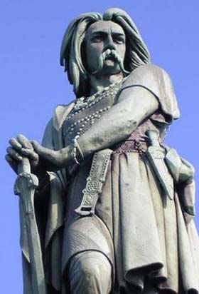

| |
Vercingetorix
Vercingetorix meaning "great warrior king" or "king of great warriors " was born in 82 BC and was a chieftain of the Arverni tribe,Vercingetorix led a general uprising of the Gauls against him in 52 B.C.He was named the king of the Arverni and general of the confederates. After an initial defeat at Noviodunum Biturigum, Vercingetorix used guerrilla warfare to harass Caesar supply lines and cleverly offered to engage Caesars forces on terrain unfavourable to the Romans. He successfully held the Arvernian hill-fort of Gergovia against an assault by Caesar.

Vercingetorix
For
more information please visit :
More Information about Vercingetorix from Wikipedia
| |
|
|